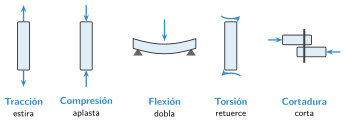

Materiales y estructuras de un robot
🤔 Pienso5 min
Qué hago aquí: Piensa un momento y contesta con lo que ya sabes. No pasa nada si no lo sabes: es para empezar.
Une cuatro pajitas en forma de cuadrado y tres en forma de triángulo. Empuja una esquina de cada figura. ¿Cuál se deforma?
✏️ Puedes responder escribiendo, con un dibujo o un esquema, o contándolo en voz alta.
📖 Leo y aprendo15 min
Qué hago aquí: Lee despacio, mira los dibujos y los ejemplos, y quédate con la idea clave del final.
Todo robot tiene un «esqueleto». Sostiene los motores, la placa y los sensores. Es su estructura.
Las fuerzas empujan, tiran o retuercen las piezas. A esto lo llamamos esfuerzo.

Materiales. Los más usados en robots del taller son:
- Aluminio: ligero y resistente. El chasis del mBot es de aluminio.
- Plástico PLA: se imprime en 3D. Sirve para soportes y carcasas.
- Madera o metacrilato: se cortan con láser. Sirven para bases planas.
✏️ Hago25 min
Qué hago aquí: Haz las actividades en orden. Empieza siempre por las básicas.
Completa: la estructura el robot, sus piezas y las mantiene en su .
Une cada esfuerzo con lo que hace.
| Tracción • | • Dobla |
| Compresión • | • Retuerce |
| Flexión • | • Estira |
| Torsión • | • Aplasta |
Escribe qué esfuerzo soporta cada pieza.
| Pieza | Esfuerzo |
|---|---|
| El cable de una grúa que sube una carga | |
| Las patas de una mesa | |
| El eje que hace girar una rueda |
Vuelve a las pajitas de Pienso. ¿Qué harías para que el cuadrado no se deforme? Dibújalo.
✏️ Puedes responder escribiendo, con un dibujo o un esquema, o contándolo en voz alta.
Vas a hacer la carcasa de un robot en el taller. Tienes una impresora 3D. ¿Qué material eliges? Da una razón.
🚀 Amplío (si quieres saber más)
Qué hago aquí: ¿Has terminado? Lee la curiosidad o elige el reto. Es voluntario.
Busca la torre Eiffel o una grúa en una foto. Marca tres triángulos de su estructura y explica para qué sirven.
✅ Compruebo5 min
Qué hago aquí: Contesta sin mirar la ficha y marca cómo lo llevas.